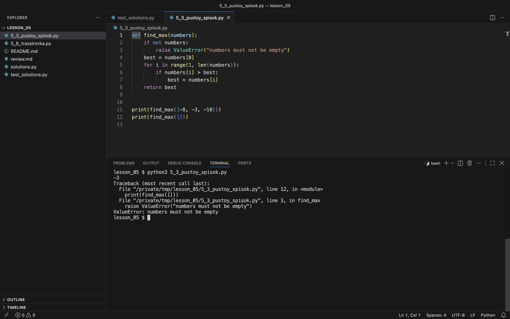

Пустые данные, минусы и дубликаты
Проверяем инициализацию и различаем одинаковые значения и одинаковые индексы.
Как выбрать начальное значение
Запись best = 0 содержит неявное предположение: максимум списка не меньше нуля. Для списка из отрицательных чисел оно неверно. С минимумом то же самое: старт с нуля даёт неверный ответ, если все числа положительные. Начальное значение выбирают так, чтобы оно соответствовало смыслу переменной на любом допустимом входе. Для максимума или минимума непустого списка это первый элемент.
Минимум, которого нет в списке
minimum = 0
for value in [5, 8, 2]:
if value < minimum:
minimum = valueЗапишите итоговый minimum и причину ошибки.
Открыть разбор
Получится 0, хотя минимум входа равен 2. Каждое сравнение с нулём ложно. Для непустого списка можно начать с первого элемента и пройти остальные.
Запуск с двумя начальными значениями
Запустим этот фрагмент и исправленный вариант, где минимум начинается с первого элемента:
minimum = 0
for value in [5, 8, 2]:
if value < minimum:
minimum = value
print(minimum)
numbers = [5, 8, 2]
minimum = numbers[0]
for value in numbers[1:]:
if value < minimum:
minimum = value
print(minimum)0
2Первая строка вывода — ответ со стартом 0, вторая — со стартом numbers[0]. Срез numbers[1:] здесь создаёт копию; в find_max ниже тот же приём сделан через индексы, чтобы не тратить память.
Пустой вход
Кандидат«so what should I return if the array is null, or if there's no value?»
Перевод: что возвращать, если массив равен null или в нём нет значений?
Интервьюер«Don't worry about that case. We'll just assume it'll always have some values in it.»
Перевод: Об этом не беспокойтесь. Будем считать, что значения в нём есть всегда.
Вопрос о пустом входе не обязательно добавляет работы. Здесь интервьюер ответил, что пустого массива не будет, и кандидат смог на это опираться: ответ интервьюера стал частью условия.
Разработчик Яндекса«Когда пишете код, не забывайте про крайние случаи, будь то пустой массив, строка или ноль.»
Три случая из этого совета — пустой массив, пустая строка и ноль — встречаются в кейсах и практикуме этой темы.
def find_max(numbers):
if not numbers:
raise ValueError("numbers must not be empty")
best = numbers[0]
for i in range(1, len(numbers)):
if numbers[i] > best:
best = numbers[i]
return bestУсловие if not numbers истинно для пустого списка. Тогда инструкция raise прерывает функцию и выбрасывает исключение ValueError. Если список не пустой, первый элемент гарантированно существует, и его можно взять как начальный максимум.
Проверим оба случая: обычный вход и пустой список.
def find_max(numbers):
if not numbers:
raise ValueError("numbers must not be empty")
best = numbers[0]
for i in range(1, len(numbers)):
if numbers[i] > best:
best = numbers[i]
return best
print(find_max([-8, -3, -10]))
print(find_max([]))-3
Traceback (most recent call last):
File "5_3_pustoy_spisok.py", line 12, in <module>
print(find_max([]))
^^^^^^^^^^^^
File "5_3_pustoy_spisok.py", line 3, in find_max
raise ValueError("numbers must not be empty")
ValueError: numbers must not be emptyПервая строка — ответ для [-8, -3, -10]. Дальше Python печатает трассировку (traceback) — цепочку вызовов, которая привела к ошибке. Её читают снизу вверх: в последней строке тип ошибки ValueError и текст сообщения, выше — строка с raise. Такой результат для пустого входа и записан в контракте.

line 12 трассировка указывает на вызов find_max([]), в строке line 3 — на raise внутри функции. Номера строк совпадают с номерами слева от кода.Проход начинается с индекса 1: элемент с индексом 0 уже учтён. Мы обращаемся к элементам по индексам и не создаём срез numbers[1:]. Поэтому дополнительная память прохода O(1); срез списка потребовал бы O(n).
Одинаковые значения и одинаковые индексы
Для [1, 4, 4, 7] у запроса «найти индекс 4» два подходящих ответа: 1 и 2. Если в условии сказано «первое вхождение», ответ один — 1, и для него можно написать тест.
Значение 4 записано в двух ячейках — с индексами 1 и 2.
- Интервьюер
Есть ли в списке два числа с суммой
target? - Кандидат
Двумя циклами переберу все
aиbи сравню сумму. - Интервьюер
Что вернёт код для
[3]иtarget = 6? - Кандидат
3 + 3 = 6, значит
True. - Интервьюер
Сколько чисел в этом списке?
- Кандидат
Одно. Я сложил элемент сам с собой. Нужны два разных индекса: внутренний цикл начну с
i + 1. - Интервьюер
А для
[3, 3]? - Кандидат
Индексы 0 и 1 разные, ответ
Trueправильный.
- нашёл ошибку на входе из одного элемента
- проверил, что исправление не сломало случай с дубликатом
- не уточнил заранее, можно ли использовать один элемент дважды
Два равных значения в разных ячейках и один элемент, взятый дважды, — разные случаи, и в контракте их нужно различать.
Кандидат«And we don't allow for the same thing to check for itself because it's over here, it should say no valid pairs, but will probably still return true.»
Перевод: И мы не разрешаем элементу проверять самого себя: здесь должно быть «нет подходящих пар», но код, скорее всего, всё равно вернёт true.
Та же ошибка, что в функции has_pair этого модуля: элемент складывается сам с собой. Кандидат нашёл её, разбирая вход с повтором.
def has_pair(numbers, target):
for a in numbers:
for b in numbers:
if a + b == target:
return True
return FalseОдин элемент используется дважды
Контракт требует два разных индекса. Сравните результаты для [3], target = 6 и [3, 3], target = 6. Найдите нарушение.
Открыть разбор
Код возвращает True в обоих случаях. По контракту для [3] ожидаем False: второго индекса нет. Для [3, 3] ответ True корректен. Перебирать пары можно по индексам i и j, где j > i. Тогда один индекс не используется дважды.
def has_pair_wrong(numbers, target):
for a in numbers:
for b in numbers:
if a + b == target:
return True
return False
def has_pair(numbers, target):
for i in range(len(numbers)):
for j in range(i + 1, len(numbers)):
if numbers[i] + numbers[j] == target:
return True
return False
for data in ([3], [3, 3]):
print(data, has_pair_wrong(data, 6), has_pair(data, 6))[3] True False
[3, 3] True TrueВ каждой строке вывода: вход, ответ исходной версии и ответ исправленной. Для [3] результаты расходятся: исходная версия сложила элемент сам с собой. Внутренний цикл исправленной версии начинается с i + 1, поэтому пара всегда из двух разных позиций.
Проверьте себя
Сначала выберите ответ, потом нажмите «Проверить». Пояснение появится у каждого варианта, в том числе у невыбранных.
Функция возвращает индекс первого максимума в списке целых чисел; для пустого списка — None. Выберите пять входов, которые обязательно войдут в тесты.
Python int не переполняется. Для поиска индекса размер числа не важен.
Пустой вход: отдельная ветка контракта, ожидаем None.
Максимум в последней ячейке: проверяет правую границу цикла.
Максимум повторяется: ожидаем индекс 1. На нём ошибается версия со сравнением
>=вместо>.Ещё один возрастающий список с максимумом в конце. Такой случай в наборе уже есть.
Один элемент: цикл по остальным элементам не выполняется ни разу.
Обычный случай с максимумом в середине. Тест полезен, но типичные ошибки ловят входы с особенностями.
Только отрицательные числа: на них ошибается версия, которая начинает с нуля.